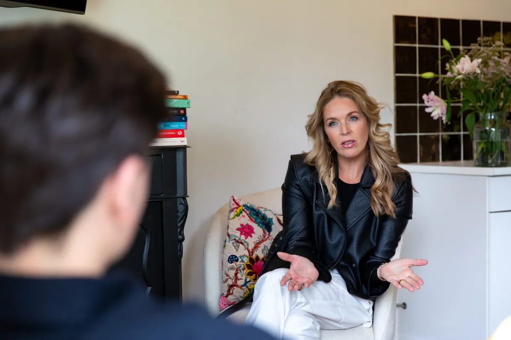

Waar bewustwording leidt tot begrijpen
Ben je op zoek naar relatietherapie of coaching in Noordwijk, Katwijk, Leiden, Oegstgeest of omgeving? Ik bied ondersteuning via bewezen methodieken als EFT-relatietherapie en de V-Cirkel — met 18 jaar ervaring uit het bedrijfsleven.

Echt contact, echt resultaat
In een veilige, warme setting gaan we samen aan de slag. Ik luister, spiegel en geef je concrete handvatten — of je nu individueel komt of samen met je partner. Geen lange wachtlijsten, wel persoonlijke aandacht.
Wanneer coaching of relatietherapie je kan helpen
- Je voelt je overweldigd door alles wat op je afkomt
- Je hebt moeite om grenzen aan te geven
- Je mist de verbinding in je relatie(s)
- Je wilt begrijpen waarom je doet wat je doet
- Je zoekt balans tussen werk, gezin en persoonlijke ontwikkeling
EFT-relatietherapie
Een wetenschappelijk onderbouwde vorm van therapie gericht op het herstellen van vertrouwen en nabijheid tussen partners. We gaan naar de kern van relationele problemen en creëren nieuwe, verbindende ervaringen.
Relatiecoaching
Gericht op communicatieproblemen, emotionele intimiteit en terugkerende conflictpatronen. Voor stellen die weer echt willen samenwerken in plaats van langs elkaar heen te leven.
Individuele coaching voor professionals
Voor professionals met werkstress, leiderschapsvraagstukken of de wens om persoonlijk te groeien. Ontdek je patronen en ontwikkel praktische tools die werken — ook onder hoge druk.
Burn-out en stress coaching
Signaalherkenning en het (leren) aangeven van grenzen. Vanuit eigen ervaring help ik je vroege waarschuwingssignalen herkennen en coping-strategieën ontwikkelen die echt werken.
V-Cirkel coaching
Leer jezelf beter kennen via het Enneagram, gebaseerd op het werk van Drs. Monique Schouten. Diepgaand inzicht in je onbewuste drijfveren — niet alleen je gedrag.
Gratis kennismakingsgesprek
Een vrijblijvend gesprek van 30 minuten (individueel) of 60 minuten (relatie). Geen verplichtingen, wel eerste inzichten en een wederzijdse check of we bij elkaar passen.
Bewezen methoden
Ik werk met wetenschappelijk onderbouwde methoden die je helpen jezelf en je relaties beter te begrijpen en te versterken.
Ontwikkeld door Drs. Monique Schouten op basis van het Enneagram. Biedt diepgaand inzicht in je persoonlijke gedragingen, drijfveren en interacties — wie je bent, je sterke punten, je valkuilen en hoe je optimaal functioneert.
Meer over V-Cirkel coaching →Ontwikkeld door Dr. Sue Johnson. Een wetenschappelijk onderbouwde benadering die emotionele banden tussen partners versterkt — door communicatie te herstellen en emotionele responsiviteit te bevorderen. 70-73% succes in volledig herstel van relaties.
Meer over EFT-relatietherapie →